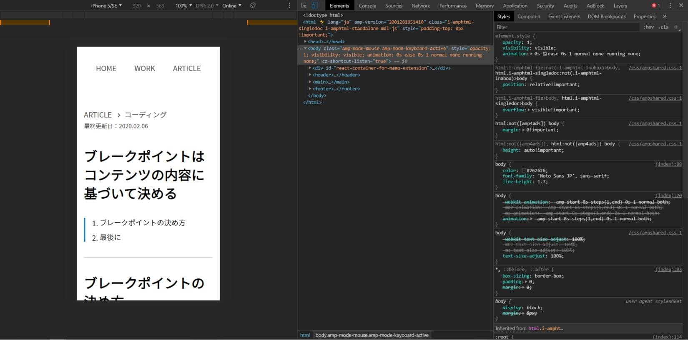

ブレークポイントの決め方
「スマホやPCの主流の画面幅は〇〇pxだから、ブレークポイントはこの値にしよう！」と解説しているサイトを散見しますが、Googleはそれを推奨していません。
なぜなら、メンテナンスが非常に大変になる可能性があ
るからだとGoogleは説明しています。例えば、「横幅768pxのタブレットのシェア率が最多だから」という理由で、ブレークポイントを768pxとしてコーディングしたとします。では、今後販売されるタブレットの主流の横幅は変わらずに768pxである保証はあるのでしょうか？ もし横幅840pxタブレットが主流になったらどうなるでしょう。またコーディングし直しますか？ メンテナンスが非常に大変になるとはこのことを言っているのでしょう。
ではブレークポイントをどのように決めるかというと、その点もGoogleが説明してくれています。ざっと説明します。
狭い横幅のままレイアウト崩れが起きないようにコーディングします。ちなみに僕はデベロッパーツールのDevice Modeで「iPhone 5/SE（横幅320px）」を選択してコーディングしています。
 - 画面幅を少しずつ広げながら、デザインがおかしくないかを確認します。「デザインがおかしくないか」というのは例えば、文字サイズが小さくないか、余白が広くないか、画像が大きくないかなどです。
- もしデザインがおかしい箇所があったら、その時点での画面幅をブレークポイントとし、デザインを調整します。
まぁ、詳しくは「レスポンシブ ウェブデザインの基本 | Web | Google Developers」の「ブレークポイントの決め方」の章を見てください。画像付きで分かりやすく解説しています。Googleさんがご丁寧に解説しているので僕が改めて詳しく解説する必要もありませんからね。
ちなみに、WCAG2.1のSuccess Criterion 1.4.10 Reflow（レベルAA、日本語訳はこちら）では、幅320pxで情報や機能が損なわず、かつ、スクロールせずにコンテンツを表示できることを求めています。なので、アクセシビリティを考慮するのであれば、320px幅からコーディングを始めるといいかもしれません。
フィードバック
もし誤った情報を見つけたりお聞きしたいことがあったりした場合は、TwitterのDMかメールにご連絡ください。